Chapter 4 · Part 1 — Mud Bath
Jack looked over the edge of the riverbank.
Annie had fallen into a pool of mud near the water. The thick black mud was up to her chest.
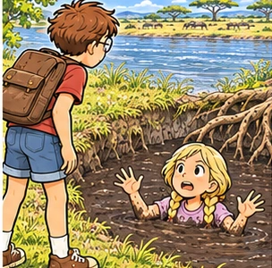
“I slipped,” she said. “It feels like quicksand.”
Jack threw down his pack and got on his knees.
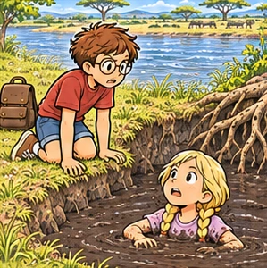
“Be careful,” said Annie. “Don’t slip, too.”
Jack pointed to a tangle of old tree roots sticking out of the bank. “Grab those!” he said.
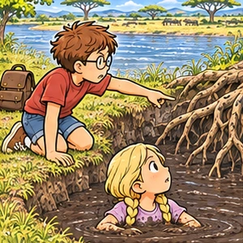
Annie reached for the roots. “Too far,” she said, breathing hard. “I’m sinking.”
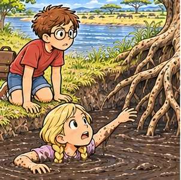
She was sinking. The mud was up to her neck.
“Hold on!” Jack looked around wildly. He saw a fallen tree branch near the bank.
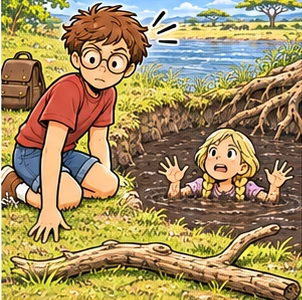
He raced to it, picked it up, and carried it back to Annie. Only her head and arms stuck out of the mud now.
Jack held out the branch. Annie grabbed it.
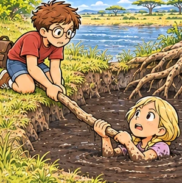
“Hold tight,” said Jack. “I’ll drag you over to the roots!”
He started pulling on the branch.
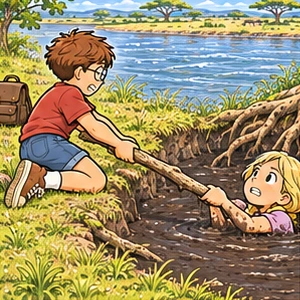
“I’m still sinking!” Annie wailed. The mud was up to her chin.
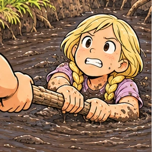
“Come on!” said Jack. “You can do it! I know you can! Try! Try!”
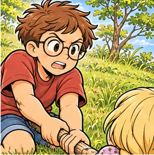
Just then, Jack heard a splash! He looked up.
On the other side of the wide river, a wildebeest had jumped into the water. Another jumped … then another. They were headed right toward Jack and Annie.
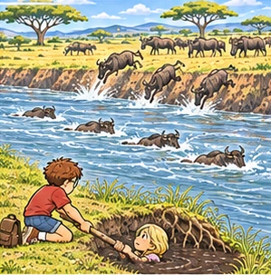
“Hold on tight!” said Jack. He pulled on the stick again.
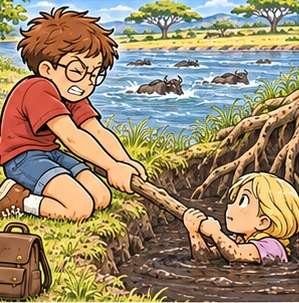
Annie moved a tiny bit.
“Hey, Jack, on the moon it felt like I weighed ten pounds,” said Annie. “And in this mud it feels like I weigh a ton.”
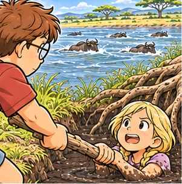
“Concentrate, Annie,” said Jack, trying not to slip down the bank.
“I am.”
The lead wildebeests were halfway across, swimming toward them. Many more wildebeests were jumping into the water.
“It’s now or never!” said Jack. He took a deep breath. He pulled really hard.
Just then, a shadow passed over them. Jack looked up.
“Uh-oh,” he said.
A huge vulture circled overhead.
“It thinks you’re near the end,” said Jack.
“Oh, get out of here!” Annie shouted at the vulture. “I’m fine!”
In a burst of fury, she let go of the branch. She lunged for the roots. She grabbed them!
“Yes!” cried Jack. “Pull! Pull!”
Slowly, Annie pulled herself out. She was covered with the black mud from head to toe.
Jack helped her onto the bank, getting mud all over himself.
“See!” Annie shook her fist at the vulture. “I’m fine! Now beat it!”
But the giant, ugly bird still circled.
“Come on. Let’s get away from him,” said Jack. He pushed his glasses into place.
“Rats,” he said. Now his glasses were muddy.
He tried to clean his hands in the grass.
“Oh, no!” shouted Annie.
Jack turned to her.
“The wildebeests will get stuck in the mudhole!” she cried. She waved her arms at the wildebeests struggling to swim across the river.
“Not here,” she shouted. “Not here!”
But the frantic swimmers kept coming.